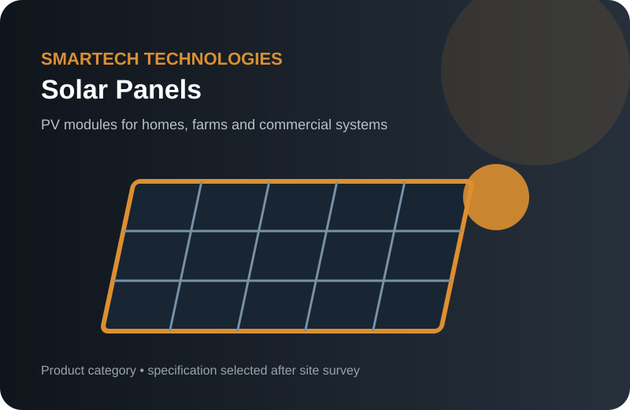
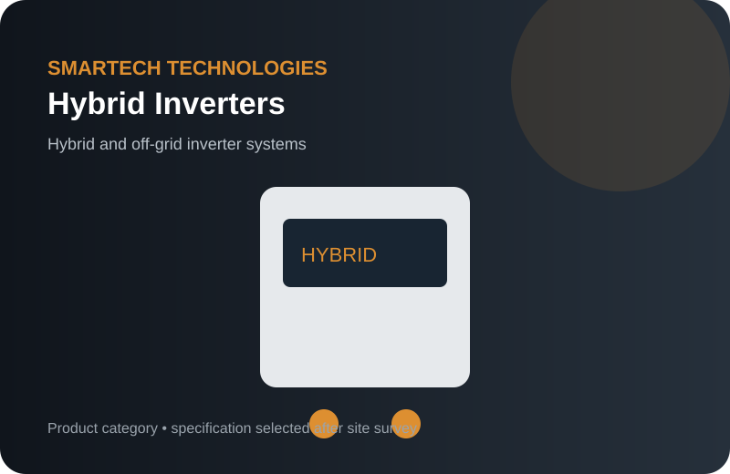
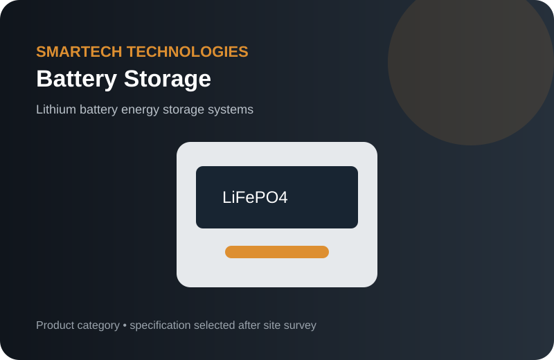
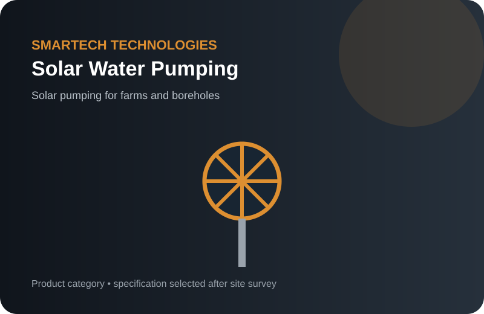
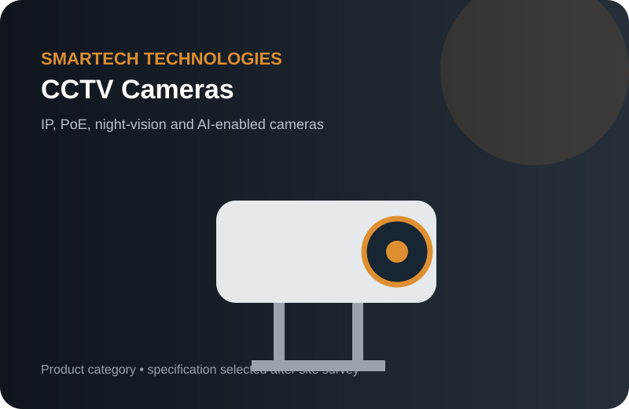
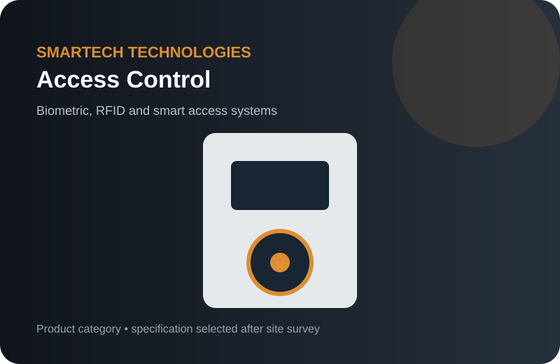
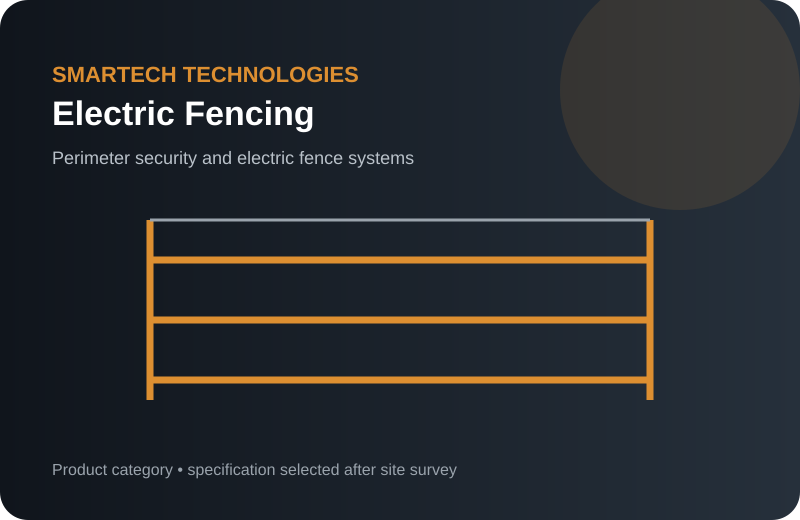
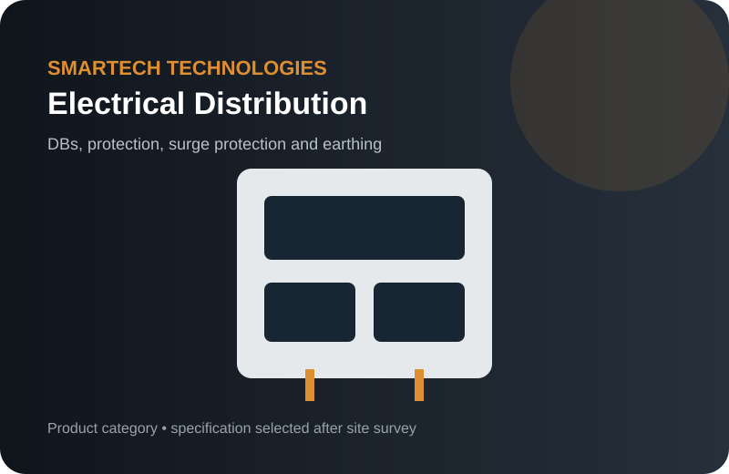

PRODUCT CATEGORY
Solar Panels
PV modules for homes, farms and commercial systems. Smartech specifies, supplies and installs the right configuration after a site assessment.
Request specification →Searches often start with a product name—solar panels, hybrid inverter, lithium battery, CCTV camera, access control, electric fence, fibre optic cable or Cat6 cabling. Smartech turns that product search into a correctly sized supply-and-installation solution.

PV modules for homes, farms and commercial systems. Smartech specifies, supplies and installs the right configuration after a site assessment.
Request specification →
Hybrid and off-grid inverter systems. Smartech specifies, supplies and installs the right configuration after a site assessment.
Request specification →
Lithium battery energy storage systems. Smartech specifies, supplies and installs the right configuration after a site assessment.
Request specification →
Solar pumping for farms and boreholes. Smartech specifies, supplies and installs the right configuration after a site assessment.
Request specification →
IP, PoE, night-vision and AI-enabled cameras. Smartech specifies, supplies and installs the right configuration after a site assessment.
Request specification →
Biometric, RFID and smart access systems. Smartech specifies, supplies and installs the right configuration after a site assessment.
Request specification →
Perimeter security and electric fence systems. Smartech specifies, supplies and installs the right configuration after a site assessment.
Request specification →
Fire detection and intrusion alarm systems. Smartech specifies, supplies and installs the right configuration after a site assessment.
Explore category →
Structured cabling, racks, switches and fibre. Smartech specifies, supplies and installs the right configuration after a site assessment.
Explore category →
DBs, protection, surge protection and earthing. Smartech specifies, supplies and installs the right configuration after a site assessment.
Request specification →Smartech also supplies and integrates workplace technology, security screening, communications, public address and automation systems. These categories are separated because buyers often search for the product or application first.

Interactive LED screens, interactive displays, video walls, commercial displays, digital signage and presentation systems for boardrooms, classrooms, reception areas, control rooms and public spaces.

Meeting-room and collaboration technology for Zoom Rooms, Microsoft Teams Rooms and Google Meet, including cameras, microphones, speakers, room controllers and displays.

Integrated CCTV, access control, biometric systems, video analytics, ANPR, intrusion detection and security monitoring for commercial, industrial and institutional sites.

Structured cabling, Cat6/Cat6A, fibre optic infrastructure, network racks, switches, wireless networks, patch panels, SFPs and data-centre connectivity.

Indoor and outdoor public address, paging, background music and voice evacuation systems for offices, schools, factories, campuses, estates, transport and public facilities.

Home and office automation, smart controls, room automation, visitor technology, occupancy and people-counting systems and integration with security and building systems.

Walk-through metal detectors, baggage and X-ray screening, turnstiles, boom barriers, gate automation, visitor management and controlled-entry solutions.

Solar geysers and hot water systems for homes, offices, hotels and institutions, sized against tank capacity, roof orientation and daily demand.
Aerial surveillance and intrusion-detection dispatch for large perimeters, ranches, farms and estates, integrated with fixed CCTV and perimeter alarms.
Ceiling and lighting design, boardroom layouts and finishes, coordinated with the electrical, networking, CCTV and AV systems for the same space.
Send your location, property type and requirement. We can scope the system and prepare an itemized quotation.
Request a QuoteFactory and warehouse solar systems with electrical integration.
Borehole, irrigation and commercial solar pumping.
Standalone solar street lighting for roads, compounds and remote sites.
Fibre optic infrastructure and structured networking.
Searchers often combine a brand with a product, location or installation term. Smartech's brand pages explain where each platform fits and connect the search to a complete supply, installation and support conversation. Exact models and availability should be confirmed in the quotation.
Jinko Solar · JA Solar · LONGi · Trina Solar
Deye · Growatt · Solis · Victron Energy · Felicity Solar
Biometric attendance · Burglar alarms · Automated gates · ANPR · Video intercom
Motor installation, starters, VFDs, soft starters, protection, MCC integration, testing, troubleshooting and maintenance for pumps, fans, compressors, conveyors and industrial machinery.
Explore Motor Solutions